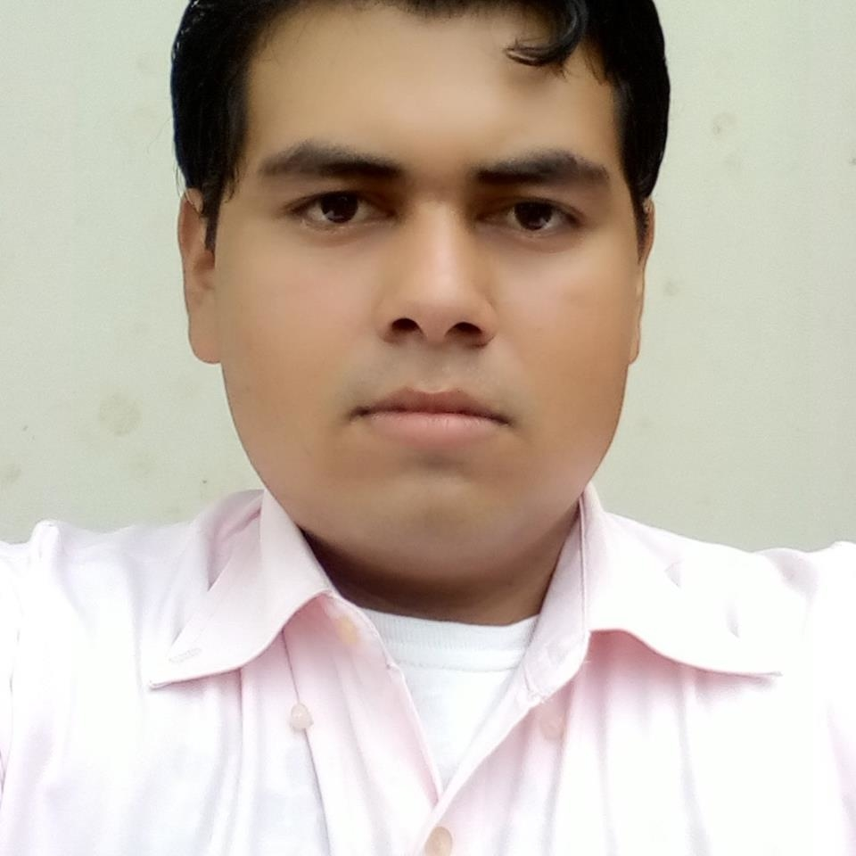

CV de David Hernandez
INGENIERO DE SISTEMAS
Experiencia en Soporte Técnico
Educacion
- Ingeneria en Sistemas
- 2014 - Actualmente - Universidad Adventista de Nicaragua (UNADENIC)
- Curso Soporte Tecnico
- Agosto-Noviembre 2017
- Curso basico de Reparación y Mantenimiento de Computadoras.
- Junio-julio 2017, Upoli Campus Rivas

Experiencia Profesional
- Colaborador De soporte Tecnico
- Enero-Diciembre 2017, Alcaldia Municipal de Rivas
- Profesor Curso Basico de Internet
- Enero-marzo 2018, Escuela Tecnologica para la Juventud-Rivas
- INGENIERO DE LOGISTICA
- Agosto-Septiembre 2018, Fundacion Davis Projects for peace, Programa A Nation United: Encouraging Nicaraguan Community and Education